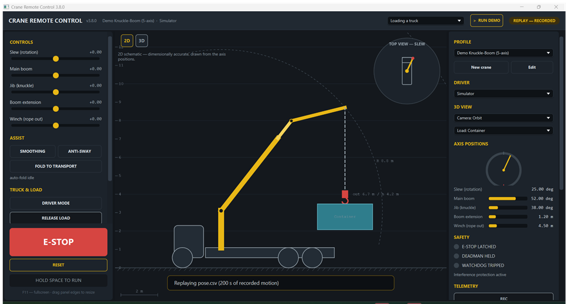

The same controls and the same discipline as a real knuckle-boom crane — latching emergency stop, hold-to-run, watchdog, position limits. Every session records, replays and summarises, so an instructor can mark what actually happened.
Free. No account, no licence key. Windows 10/11, ~43 MB, includes its own Java runtime.
A latching emergency stop that only a person can clear, hold-to-run, a command watchdog, per-axis position limits and interference protection. The habits it teaches are the ones that transfer.
Recordings carry their own provenance — which crane, which trainee, when, in what units — and reduce to what gets marked: emergency stops tripped, limits driven into, time actually moving, control smoothness.
A crane is a JSON profile, not code. Ships with three; build your own in the app. The same software drives a three-axis bench rig or a five-axis one.

CraneRemoteControl.exe. No admin rights needed.This is training software, not certified safety equipment. It does not replace supervised time on a real machine.
The emergency stop here is a software latch. On any physical rig, the emergency stop must also be a hardware circuit that removes motor power without depending on this software, any firmware, or any processor agreeing to it — and the travel limits must be enforced by the machine itself.
The reasoning is written up in the protocol spec, section 0.
It is being built into a desktop crane you can actually touch. If you teach heavy equipment, mechatronics or crane operation, I would like fifteen minutes of your time: what would have to be true for you to use this in a class, and what is missing?